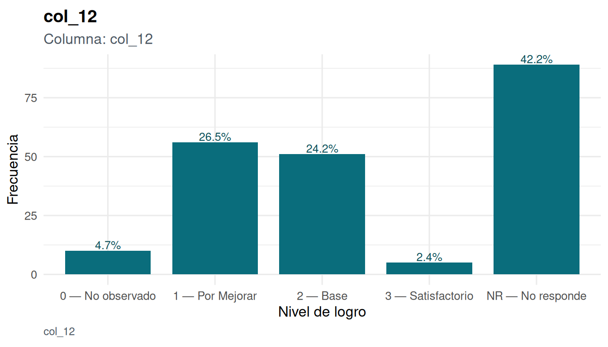
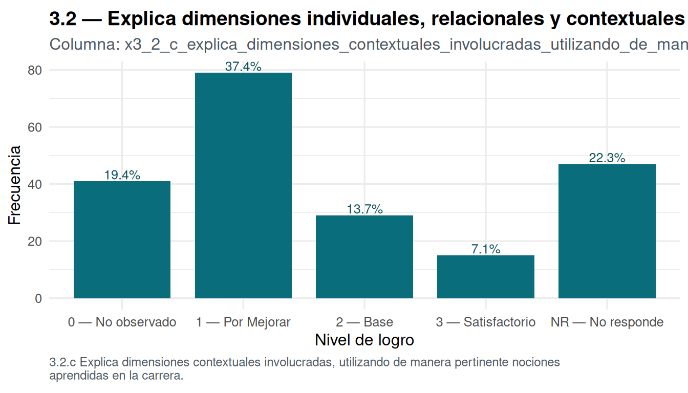
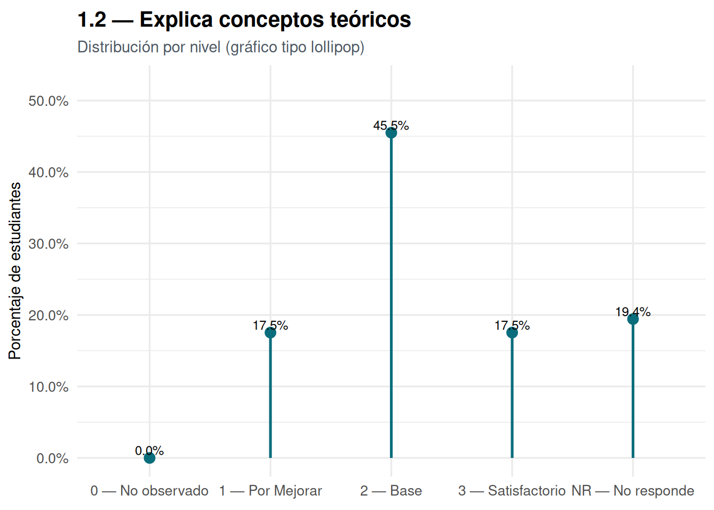
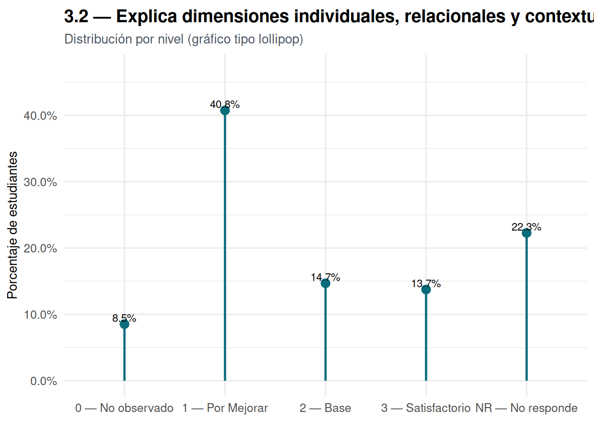
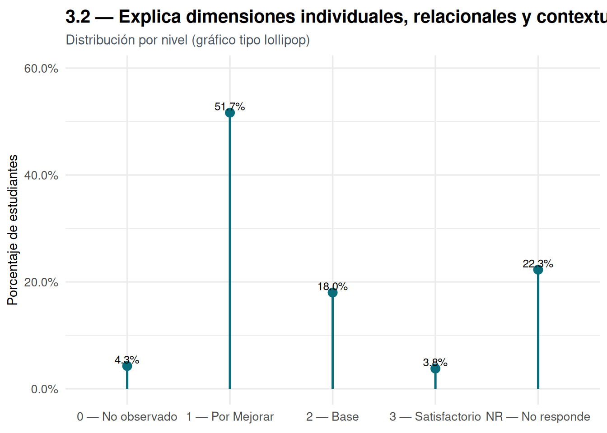
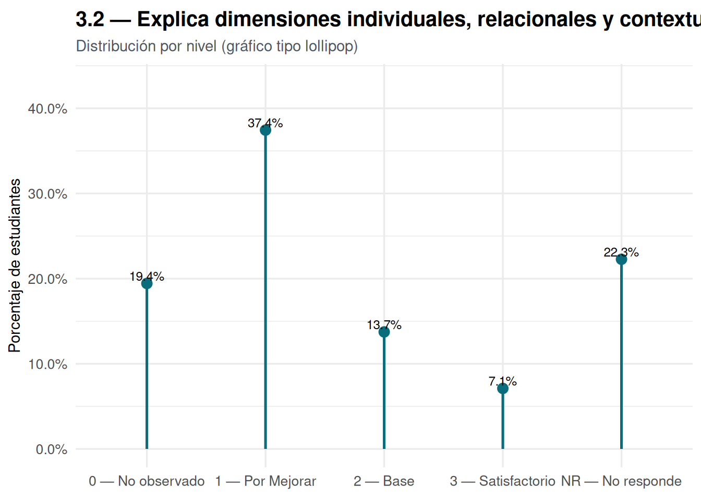
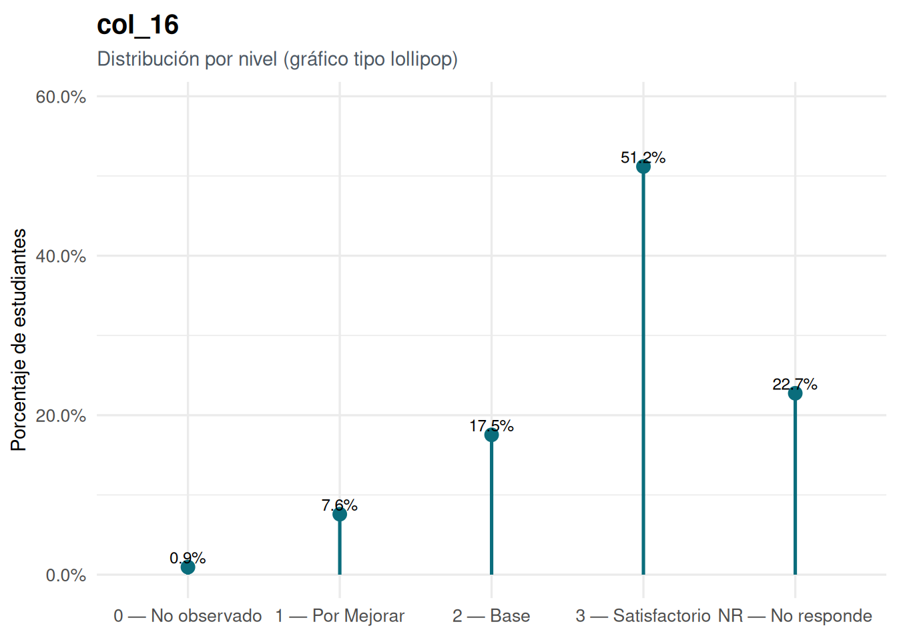

Este informe entrega una lectura claramente descriptiva del desempeño de la cohorte en siete ítems de la evaluación EPI. Cada gráfico muestra la distribución de niveles (0–3) y la proporción de NR, lo que permite identificar patrones de base (0–1), consolidación (2) y techo (3) sin imponer interpretaciones de contenido. El foco es visibilizar la forma de las distribuciones —por ejemplo, si hay concentración en un nivel específico, dispersión amplia o presencia relevante de NR— para orientar decisiones posteriores (refuerzo, articulación con cursos, seguimiento).
Bajo cada figura agregamos un párrafo automático que resume: i) proporciones por nivel, ii) modo (nivel más frecuente), iii) medidas de tendencia y dispersión (media, mediana e IQR sobre válidos 0–3) y iv) una lectura orientativa (sesgo a base, consolidación, techo o patrón mixto). Esta lectura no interpreta el significado sustantivo de los niveles, solo describe el perfil estadístico observado.
Sugerencia de lectura: si observas mucha masa en 0–1, piensa en reforzar fundamentos; si predomina 2, refleja consolidación con margen para empujar a 3; si hay techo (3), podría haber contenido ya dominado; si NR es alto, conviene revisar cobertura/implementación.
Tabla interactiva con la rúbrica (0–3 + NR)
Escala de niveles de logro (rúbrica)
Distribución por ítem (0–3 + NR)
La distribución muestra 45.5% en el nivel 2. Reparto por niveles: 0=0.0%, 1=17.5%, 2=45.5%, 3=17.5%, NR=19.4%. Sobre válidos (0–3), la media es 2, la mediana 2 y el rango intercuartílico 2–2. En síntesis, el patrón sugiere una consolidación mayoritaria en nivel 2.

La distribución muestra 42.2% en el nivel NR. Reparto por niveles: 0=4.7%, 1=26.5%, 2=24.2%, 3=2.4%, NR=42.2%. Sobre válidos (0–3), la media es 1.42, la mediana 1 y el rango intercuartílico 1–2. En síntesis, el patrón sugiere una participación de NR relevante; conviene revisar cobertura y condiciones de aplicación.
La distribución muestra 40.8% en el nivel 1. Reparto por niveles: 0=8.5%, 1=40.8%, 2=14.7%, 3=13.7%, NR=22.3%. Sobre válidos (0–3), la media es 1.43, la mediana 1 y el rango intercuartílico 1–2. En síntesis, el patrón sugiere un perfil mixto sin un sesgo marcado.
La distribución muestra 51.7% en el nivel 1. Reparto por niveles: 0=4.3%, 1=51.7%, 2=18.0%, 3=3.8%, NR=22.3%. Sobre válidos (0–3), la media es 1.27, la mediana 1 y el rango intercuartílico 1–2. En síntesis, el patrón sugiere un sesgo hacia bases (0–1), lo que sugiere reforzar fundamentos.

La distribución muestra 37.4% en el nivel 1. Reparto por niveles: 0=19.4%, 1=37.4%, 2=13.7%, 3=7.1%, NR=22.3%. Sobre válidos (0–3), la media es 1.11, la mediana 1 y el rango intercuartílico 0.75–2. En síntesis, el patrón sugiere un sesgo hacia bases (0–1), lo que sugiere reforzar fundamentos.
La distribución muestra 51.2% en el nivel 3. Reparto por niveles: 0=0.9%, 1=7.6%, 2=17.5%, 3=51.2%, NR=22.7%. Sobre válidos (0–3), la media es 2.54, la mediana 3 y el rango intercuartílico 2–3. En síntesis, el patrón sugiere un techo (3) predominante, consistente con desempeños altos.
La distribución muestra 46.9% en el nivel NR. Reparto por niveles: 0=8.1%, 1=10.4%, 2=27.5%, 3=7.1%, NR=46.9%. Sobre válidos (0–3), la media es 1.63, la mediana 2 y el rango intercuartílico 1–2. En síntesis, el patrón sugiere una participación de NR relevante; conviene revisar cobertura y condiciones de aplicación.
Anexo · Ejemplo de gráfico alternativo tipo “lollipop”





Notas finales
Los enunciados de cada ítem se extraen desde la fila inmediatamente superior al inicio de datos; si no hay texto, se usa el colapso de encabezados.
El texto bajo cada figura es descriptivo y automático (repartos, tendencia, dispersión y lectura orientativa), sin interpretar sustantivamente el significado de los niveles.
Para forzar un orden/selección exacta de columnas (p. ej., 1.1 → 4.2), reemplaza item_cols por un vector explícito con los nombres reales de tu planilla.
Source Code
---title: ""subtitle: ""author: ""params: archivo: value: "/home/rober/Documentos/epi-cchh-reports/data/raw/BD REPORTE EPI PSICOLOGÍA.xlsx" label: "Archivo Excel (Resultados Individuales)"format: html: toc: true number-sections: false df-print: paged theme: styles/report.scss title-block-banner: false code-fold: true code-tools: true smooth-scroll: true include-after-body: _footer.htmlexecute: freeze: auto echo: true---{.brand-logo}<p class="brand-title"><span class="brand-title-main">Análisis EPI</span><span class="brand-title-sub">Reporte carrera de Psicología</span></p>Roberto Cantillan Carrasco## IntroducciónEste informe entrega una lectura **claramente descriptiva** del desempeño de la cohorte en siete ítems de la evaluación EPI. Cada gráfico muestra la **distribución de niveles (0–3)** y la **proporción de NR**, lo que permite identificar patrones de **base (0–1)**, **consolidación (2)** y **techo (3)** sin imponer interpretaciones de contenido. El foco es **visibilizar la forma de las distribuciones** —por ejemplo, si hay concentración en un nivel específico, dispersión amplia o presencia relevante de NR— para orientar decisiones posteriores (refuerzo, articulación con cursos, seguimiento).Bajo cada figura agregamos un **párrafo automático** que resume: i) proporciones por nivel, ii) **modo** (nivel más frecuente), iii) **medidas de tendencia y dispersión** (media, mediana e IQR sobre válidos 0–3) y iv) una **lectura orientativa** (sesgo a base, consolidación, techo o patrón mixto). Esta lectura **no interpreta** el significado sustantivo de los niveles, solo describe el **perfil estadístico** observado.> **Sugerencia de lectura:** si observas mucha masa en 0–1, piensa en **reforzar fundamentos**; si predomina 2, refleja **consolidación** con margen para empujar a 3; si hay techo (3), podría haber **contenido ya dominado**; si NR es alto, conviene revisar **cobertura/implementación**.```{r setup, include=FALSE}if (!requireNamespace("pacman", quietly =TRUE)) install.packages("pacman")pacman::p_load( tidyverse, readxl, janitor, readr, forcats, scales, glue, stringr, ggplot2, rlang)# Paleta UAHbrand_main <-"#0a6d7c"brand_dark <-"#0a4e58"brand_muted <-"#4b5661"knitr::opts_chunk$set(message =FALSE, warning =FALSE)options(scipen =999, dplyr.summarise.inform =FALSE)``````{r load, include=FALSE}# [1] Carga del archivo (OCULTO)archivo <- params$archivostopifnot(file.exists(archivo))``````{r parser, include=FALSE}# [2] Parser robusto (OCULTO): detecta encabezados, datos y enunciados por columnaguess_data_start_base <-function(df0){ v <-suppressWarnings(readr::parse_double(df0[[1]])) idx <-which(!is.na(v) & v >1e6) # IDs tipo RUT numéricoif (length(idx)) min(idx) elseNA_integer_}guess_header_row_base <-function(df0, data_start){if (is.na(data_start) || data_start <=1) return(NA_integer_) prev_df <-as.data.frame(df0[seq_len(data_start -1), , drop =FALSE]) nonempty <-rowSums(!is.na(prev_df) & prev_df !="") idx <-which(nonempty >=2)if (length(idx)) max(idx) elseNA_integer_}collapse_headers_block <-function(df0, header_row, data_start){if (is.na(header_row)) return(names(df0)) block <-as.data.frame(df0[seq(from = header_row, to = data_start -1), , drop =FALSE]) collapse_col <-function(x){ x <- x[!is.na(x) & x !=""]if (!length(x)) NA_character_elsepaste(x, collapse =" | ") }vapply(block, collapse_col, character(1))}make_names_from_block_base <-function(raw_names){ nm <- raw_names empties <-is.na(nm) | nm ==""if (any(empties)) { idx <-seq_along(nm); nm[empties] <-paste0("col_", idx[empties]) } janitor::make_clean_names(nm)}parse_resultados_individuales_v3 <-function(path, sheet =NULL){stopifnot(file.exists(path))if (is.null(sheet)){ shs <- readxl::excel_sheets(path) s_low <- stringr::str_to_lower(shs) cand <- shs[stringr::str_detect(s_low, "resultado") & stringr::str_detect(s_low, "individual")]if (!length(cand)) cand <- shs[stringr::str_detect(s_low, "individ")]if (!length(cand)) cand <- shs sheet <- cand[1] } raw <- readxl::read_excel(path, sheet = sheet, col_names =FALSE, col_types ="text") raw <- janitor::remove_empty(raw, which =c("rows","cols")) data_start <-guess_data_start_base(raw)if (is.na(data_start)) stop("No pude detectar el inicio de datos (ID numérico) en la 1ª columna.") header_row <-guess_header_row_base(raw, data_start) raw_collapsed <-collapse_headers_block(raw, header_row, data_start) clean_names <-make_names_from_block_base(raw_collapsed)# Toma el texto más cercano hacia arriba (primera celda no vacía por columna) grab_header_near <-function(j){ from <- data_start -1 to <-ifelse(is.na(header_row), 1L, header_row) up <-seq(from = from, to = to, by =-1L) vals <-as.character(raw[up, j]) vals <- vals[!is.na(vals) &trimws(vals) !=""]if (length(vals)) vals[1] elseNA_character_ } header_near <-vapply(seq_len(ncol(raw)), grab_header_near, character(1)) dat <- tibble::as_tibble(raw[seq(from = data_start, to =nrow(raw)), , drop =FALSE])names(dat) <- clean_names dat <- dat %>%mutate(across(everything(), ~na_if(.x, ""))) dat <- dat %>%mutate(across(everything(), ~ifelse(.x %in%c("NR","N R","nr","n r"), NA, .x))) headers <-tibble(col_index =seq_len(ncol(raw)),colname_clean = clean_names,header_near = header_near,header_collapsed = raw_collapsed )list(data = dat, headers = headers, meta =list(sheet = sheet, data_start = data_start, header_row = header_row))}parsed <-parse_resultados_individuales_v3(archivo)dat <- parsed$dataheaders <- parsed$headersmeta <- parsed$meta``````{r detect_items, include=FALSE}# [3] Detección de ítems 0–3/NR (OCULTO)to_numeric <-function(x){if (is.numeric(x)) return(x)if (is.factor(x)) x <-as.character(x) v1 <-suppressWarnings(readr::parse_number(x, locale =locale(decimal_mark=".", grouping_mark=","))) v2 <-suppressWarnings(readr::parse_number(x, locale =locale(decimal_mark=",", grouping_mark=".")))if (sum(!is.na(v2)) >sum(!is.na(v1))) v2 else v1}is_item_col <-function(x, thr =0.6){ z <-as.character(x) z <- stringr::str_trim(z) z <- z[!is.na(z) & z !=""]if (!length(z)) return(FALSE) z_up <-toupper(z) z_up[z_up %in%c("N R","N-R")] <-"NR" nums <-suppressWarnings(readr::parse_number(z_up)) ok <- (!is.na(nums) & nums %in%0:3) | (z_up =="NR")mean(ok) >= thr}nms <-names(dat)cand_cols <-unique(c(grep("^x\\d", nms, value =TRUE),grep("^col_\\d+$", nms, value =TRUE),grep("^1[\\._ ]?1\\b|^1[\\._ ]?2\\b|^3[\\._ ]?2[\\._ ]?[abc]\\b|^4[\\._ ]?[12]\\b",tolower(gsub("_", ".", nms)), value =TRUE)))if (!length(cand_cols)) { cand_cols <-setdiff(nms, c("rut","dv","primer_apellido","segundo_apellido","nombres"))}item_cols <- cand_cols[vapply(dat[cand_cols], is_item_col, logical(1))]item_pos <-match(item_cols, nms)item_cols <- item_cols[order(item_pos)]``````{r labels_items, include=FALSE}# [4] Labels de ítems + rúbrica de niveles (OCULTO)# 1) Labels de ítems desde "Resultados grupales"build_item_labels <-function(path){if (!requireNamespace("readxl", quietly =TRUE)) {return(tibble::tibble()) } shs <- readxl::excel_sheets(path) s_low <- stringr::str_to_lower(shs) cand <- shs[stringr::str_detect(s_low, "resultado") & stringr::str_detect(s_low, "grupal")]if (!length(cand)) return(tibble::tibble()) sheet <- cand[1] raw <-suppressMessages( readxl::read_excel(path, sheet = sheet,col_names =FALSE, col_types ="text") ) raw <- janitor::remove_empty(raw, which =c("rows","cols"))if (!ncol(raw) ||!nrow(raw)) return(tibble::tibble())# Fila con más celdas no vacías desde la columna 3 en adelante ne <-apply(as.matrix(raw[, -c(1,2), drop =FALSE]), 1,function(z) sum(!is.na(z) &trimws(z) !=""))if (!length(ne) ||all(ne ==0)) return(tibble::tibble()) header_row <-which.max(ne) vals <- raw[header_row, , drop =TRUE] out <- purrr::map_dfr(seq_along(vals), function(j){ val <- vals[[j]]if (is.na(val) ||trimws(val) =="") return(NULL)# Saltar columnas de puntaje/porcentaje/categoríaif (grepl("PUNTAJE TOTAL|PORCENTAJE|CATEGOR", val, ignore.case =TRUE)) {return(NULL) } code <- stringr::str_extract(val, "\\b\\d+(?:\\.\\d+)*(?:[abc])?\\b")if (is.na(code) ||trimws(code) =="") return(NULL) label <- stringr::str_trim( stringr::str_replace( val,"^\\s*\\d+(?:\\.\\d+)*(?:[abc])?\\s*[-–—\\.]*","" ) ) tibble::tibble(col_index_grupal = j,codigo_item = code,label_grupal = label ) }) out}item_labels <-build_item_labels(archivo)# 2) Rúbrica de niveles de logro (0–3 + NR) desde "Rúbrica resultados globales"build_rubrica_niveles <-function(path){ shs <- readxl::excel_sheets(path) s_low <- stringr::str_to_lower(shs) cand <- shs[stringr::str_detect(s_low, "rúbrica") & stringr::str_detect(s_low, "resultado")]if (!length(cand)) return(tibble::tibble()) sheet <- cand[1] raw <-suppressMessages( readxl::read_excel(path, sheet = sheet,col_names =FALSE, col_types ="text") ) raw <- janitor::remove_empty(raw, which =c("rows","cols"))if (!nrow(raw) ||!ncol(raw)) return(tibble::tibble())# Buscar fila donde aparece "Nivel de logro" col3 <- raw[[3]] idx <-which(stringr::str_detect( stringr::str_to_lower(col3),"nivel\\s*de\\s*logro" ))if (!length(idx)) return(tibble::tibble()) base_row <- idx[1] cats_row <- raw[base_row +1, ] pts_row <- raw[base_row +2, ] defs_row <- raw[base_row +3, ] out <- purrr::map_dfr(seq_len(ncol(raw)), function(j){ cat <- cats_row[[j]] pts <- pts_row[[j]] def <- defs_row[[j]]if (is.na(cat) ||trimws(cat) =="") return(NULL) puntaje <- stringr::str_extract(ifelse(is.na(pts), "", pts), "\\d+")if (is.na(puntaje)) return(NULL) tibble::tibble(puntaje =as.integer(puntaje),categoria = stringr::str_squish(cat),definicion = stringr::str_squish(ifelse(is.na(def), "", def)) ) }) out}rubrica_raw <-build_rubrica_niveles(archivo)if (nrow(rubrica_raw) &&"puntaje"%in%names(rubrica_raw)) { rubrica_niveles <- rubrica_raw %>% dplyr::filter(puntaje <=3) %>% dplyr::mutate(nivel = dplyr::case_when( puntaje ==3L ~3L, puntaje ==2L ~2L, puntaje ==1L ~1L, puntaje ==0L ~0L,TRUE~NA_integer_ ) ) %>% dplyr::filter(!is.na(nivel)) %>% dplyr::select(nivel, categoria, definicion) %>% dplyr::arrange(dplyr::desc(nivel))} else {# Fallback mínimo por si no se encuentra la hoja rubrica_niveles <- tibble::tibble(nivel =c(3L,2L,1L,0L),categoria =c("Satisfactorio","Base","Por mejorar","No observado"),definicion =c("Desempeño alto respecto a la expectativa de ingreso.","Desempeño acorde a la expectativa de ingreso.","Desempeño con brechas relevantes respecto a la expectativa.","No se observa evidencia suficiente para evaluar el desempeño." ) )}# Agregamos NR manualmenterubrica_niveles <- rubrica_niveles %>% dplyr::bind_rows( tibble::tibble(nivel =NA_integer_,categoria ="NR",definicion ="Respuesta no registrada (el ítem no pudo ser evaluado o la pregunta no fue respondida)." ) ) %>% dplyr::mutate(nivel_label = dplyr::if_else(is.na(nivel),"NR",as.character(nivel)) )# Vector nombrado para los labels del eje Xnivel_labels <- rubrica_niveles %>% dplyr::mutate(etiqueta = dplyr::case_when( categoria =="NR"~"NR — No responde",TRUE~ glue::glue("{nivel_label} — {categoria}") ) ) %>% {rlang::set_names(.$etiqueta, .$nivel_label)}# Fallback por si algo fallaif (!length(nivel_labels)) { nivel_labels <-c("0"="0", "1"="1", "2"="2", "3"="3", "NR"="NR")}# Funciones de labels para los gráficos y captions --------------------label_for <-function(nm){ h <- headers %>% dplyr::filter(colname_clean == nm) txt <- h$header_nearif (is.null(txt) ||!length(txt) ||is.na(txt) ||trimws(txt) =="") { txt <- h$header_collapsed } code <-NA_character_if (!is.null(txt) &&length(txt) &&!is.na(txt)) { code <- stringr::str_extract(txt, "\\b\\d+(?:\\.\\d+)*(?:[abc])?\\b") }# 3.1 Ítems desde "Resultados grupales"if (!is.na(code) &&nrow(item_labels)) { hit <- item_labels %>% dplyr::filter(codigo_item == code)if (nrow(hit)) {return(glue::glue("{code} — {hit$label_grupal[1]}")) } }# 3.2 Overrides manuales nm_low <-tolower(nm)if (grepl("3[\\._ ]?2[\\._ ]?a", nm_low)) return("3.2a — Dimensiones individuales")if (grepl("3[\\._ ]?2[\\._ ]?b", nm_low)) return("3.2b — Dimensiones relacionales")if (grepl("3[\\._ ]?2[\\._ ]?c", nm_low)) return("3.2c — Dimensiones contextuales")if (grepl("^4[\\._ ]?1\\b", nm_low)) return("4.1 — Componentes de investigación")if (grepl("^4[\\._ ]?2\\b", nm_low)) return("4.2 — Coherencia entre componentes")if (nm %in%c("col_10","x1_1","comp_11")) return("1.1 — Distingue ideas centrales")if (nm %in%c("col_11","x1_2","comp_12")) return("1.2 — Explica conceptos teóricos")# 3.3 Fallback con el header originalif (!is.null(txt) &&length(txt) &&!is.na(txt) &&trimws(txt) !="") { short <- stringr::str_replace( txt,"^\\s*\\d+(?:\\.\\d+)*(?:[abc])?\\s*[-–—\\.]*","" ) short <- stringr::str_squish(short)if (nchar(short) >120) short <-paste0(substr(short, 1, 117), "...")return(short) } nm}header_lookup <-function(nm){ h <- headers %>% dplyr::filter(colname_clean == nm) txt <- h$header_nearif (is.null(txt) ||!length(txt) ||is.na(txt) ||trimws(txt) =="") { txt <- h$header_collapsed }if (is.null(txt) ||!length(txt) ||is.na(txt) ||trimws(txt) =="") { txt <- nm } stringr::str_wrap(as.character(txt), width =100)}```## Tabla interactiva con la rúbrica (0–3 + NR)### Escala de niveles de logro (rúbrica)```{r tabla_rubrica, echo=FALSE}if (exists("rubrica_niveles") &&nrow(rubrica_niveles)) { tabla <- rubrica_niveles %>% dplyr::mutate(Nivel = dplyr::if_else(is.na(nivel), "NR", as.character(nivel)),`Categoría`= dplyr::if_else(categoria =="NR", "No responde", categoria),`Descripción`= definicion ) %>% dplyr::select(Nivel, `Categoría`, `Descripción`) DT::datatable( tabla,rownames =FALSE,options =list(pageLength =5,dom ="tip",ordering =FALSE ),class ="compact stripe hover" )} else {cat("_No se encontró la hoja de 'Rúbrica resultados globales' en el archivo de Excel._")}```## Distribución por ítem (0–3 + NR)```{r plots_items, fig.width=7, fig.height=4, echo=FALSE, results='asis'}# Chunk visible: genera el gráfico y un texto interpretativo más elaborado debajo.if (!length(item_cols)) {cat("_No se detectaron columnas con valores 0–3/NR. Verifica que los ítems estén presentes._\n")} else { fmt_pct <-function(x) scales::percent(x, accuracy =0.1)# Lectura orientativa (sin interpretación sustantiva) diagnosis <-function(p0, p1, p2, p3, pNR){ low <- p0 + p1 mid <- p2 high <- p3if (pNR >=0.25) return("una participación de **NR** relevante; conviene revisar cobertura y condiciones de aplicación.")if (low >=0.50) return("un sesgo hacia **bases (0–1)**, lo que sugiere reforzar fundamentos.")if (high >=0.50) return("un **techo (3)** predominante, consistente con desempeños altos.")if (mid >=0.45) return("una **consolidación** mayoritaria en nivel **2**.")"un **perfil mixto** sin un sesgo marcado." } plot_and_describe <-function(x, nm){ df <-tibble(raw = x) |>mutate(val =toupper(stringr::str_trim(as.character(raw))),val = dplyr::case_when( val %in%c("N R","N-R") ~"NR",TRUE~ val ),num =suppressWarnings(readr::parse_number(val)),level = dplyr::if_else(is.na(num), "NR", as.character(num)),level =factor(level, levels =c("0","1","2","3","NR")) ) |>count(level, name ="n") |>complete(level =factor(c("0","1","2","3","NR"), levels =c("0","1","2","3","NR")), fill =list(n =0)) |>mutate(prop = n/sum(n))# ---- Gráfico ---- g <-ggplot(df, aes(x = level, y = n)) +geom_col(fill = brand_main, width =0.8) +geom_text(aes(label =fmt_pct(prop)),vjust =-0.2, size =3.3, color = brand_dark) +scale_x_discrete(drop =FALSE, labels = nivel_labels) +labs(title =label_for(nm),subtitle=paste0("Columna: ", nm),x ="Nivel de logro", y ="Frecuencia",caption =header_lookup(nm) ) +theme_minimal(base_size =12) +theme(plot.title =element_text(face ="bold"),plot.subtitle =element_text(color = brand_muted),plot.caption =element_text(hjust =0, size =9, color = brand_muted),plot.margin =margin(t =8, r =6, b =8, l =6, unit ="pt") )print(g)# ---- Texto interpretativo (Markdown, debajo del plot) ---- p0 <- df$prop[df$level=="0"]; if (!length(p0)) p0 <-0 p1 <- df$prop[df$level=="1"]; if (!length(p1)) p1 <-0 p2 <- df$prop[df$level=="2"]; if (!length(p2)) p2 <-0 p3 <- df$prop[df$level=="3"]; if (!length(p3)) p3 <-0 pNR <- df$prop[df$level=="NR"]; if (!length(pNR)) pNR <-0# Métricas sobre válidos (0–3) num_vals <-suppressWarnings(readr::parse_number(as.character(x))) num_vals <- num_vals[!is.na(num_vals) & num_vals %in%0:3] media <-if (length(num_vals)) mean(num_vals) elseNA_real_ mediana <-if (length(num_vals)) median(num_vals) elseNA_real_ q1 <-if (length(num_vals)) quantile(num_vals, 0.25, names =FALSE) elseNA_real_ q3 <-if (length(num_vals)) quantile(num_vals, 0.75, names =FALSE) elseNA_real_# Modo y su porcentaje (sobre total, incluyendo NR) top_idx <-which.max(df$n) modo <-as.character(df$level[top_idx]) modo_pt <- df$prop[top_idx] diag <-diagnosis(p0, p1, p2, p3, pNR) texto <- glue::glue("La distribución muestra **{fmt_pct(modo_pt)}** en el nivel **{modo}**. ","Reparto por niveles: 0={fmt_pct(p0)}, 1={fmt_pct(p1)}, 2={fmt_pct(p2)}, 3={fmt_pct(p3)}, NR={fmt_pct(pNR)}. ","{if(!is.na(media)) glue::glue('Sobre válidos (0–3), la media es **{round(media,2)}**, la mediana **{round(mediana,2)}** y el rango intercuartílico **{round(q1,2)}–{round(q3,2)}**. ') else ''}","En síntesis, el patrón sugiere {diag}" )# Separación contundente entre ítems: línea + espaciador alto (estilos desde SCSS)cat("\n\n", texto, "\n\n<hr class='plot-sep'>\n\n<div class='plot-spacer'></div>\n\n", sep ="") } purrr::walk(item_cols, ~plot_and_describe(dat[[.x]], .x))}```### Anexo · Ejemplo de gráfico alternativo tipo “lollipop”```{r graficos_lollipop, echo=FALSE, message=FALSE, warning=FALSE, results='asis'}# Este bloque asume que ya existen:# - dat : data.frame con las respuestas crudas por ítem# - item_cols : vector con los nombres de columnas de ítems# - nivel_labels : vector con labels para 0,1,2,3,NR# - label_for() : función que devuelve el título legible del ítem# - brand_main : color principal# - brand_muted : color secundario (texto)if (!length(item_cols)) {cat("_No se detectaron columnas con valores 0–3/NR para generar lollipop plots._\n")} else { fmt_pct <-function(x) scales::percent(x, accuracy =0.1) plot_lollipop <-function(x, nm){ df <- tibble::tibble(raw = x) |> dplyr::mutate(val =toupper(stringr::str_trim(as.character(raw))),val = dplyr::case_when( val %in%c("N R","N-R") ~"NR",TRUE~ val ),num =suppressWarnings(readr::parse_number(val)),level = dplyr::if_else(is.na(num), "NR", as.character(num)),level =factor(level, levels =c("0","1","2","3","NR")) ) |> dplyr::count(level, name ="n") |> tidyr::complete(level =factor(c("0","1","2","3","NR"), levels =c("0","1","2","3","NR")),fill =list(n =0) ) |> dplyr::mutate(prop = n /sum(n) ) max_prop <-max(df$prop, na.rm =TRUE) g <- ggplot2::ggplot(df, ggplot2::aes(x = level, y = prop)) + ggplot2::geom_segment( ggplot2::aes(x = level, xend = level, y =0, yend = prop),linewidth =0.9,colour = brand_main ) + ggplot2::geom_point(size =3.2, colour = brand_main) + ggplot2::geom_text( ggplot2::aes(label =fmt_pct(prop)),vjust =-0.3, size =3.2 ) + ggplot2::scale_y_continuous(labels = fmt_pct,limits =c(0, max_prop *1.15) ) + ggplot2::scale_x_discrete(drop =FALSE,labels = nivel_labels ) + ggplot2::labs(title =label_for(nm),subtitle ="Distribución por nivel (gráfico tipo lollipop)",x =NULL,y ="Porcentaje de estudiantes" ) + ggplot2::theme_minimal(base_size =13) + ggplot2::theme(plot.title = ggplot2::element_text(face ="bold", size =15),plot.subtitle = ggplot2::element_text(color = brand_muted, size =11),axis.text.x = ggplot2::element_text(size =10),axis.text.y = ggplot2::element_text(size =10),axis.title.y = ggplot2::element_text(size =11),plot.margin = ggplot2::margin(t =8, r =6, b =8, l =6, unit ="pt") )print(g)# Separador entre plots (HTML, ahora sí como HTML real)cat("\n\n<hr class='plot-sep'>\n\n<div class='plot-spacer'></div>\n\n") } purrr::walk(item_cols, ~plot_lollipop(dat[[.x]], .x))}```## Notas finales* Los **enunciados** de cada ítem se extraen desde la fila **inmediatamente superior** al inicio de datos; si no hay texto, se usa el **colapso** de encabezados.* El texto bajo cada figura es **descriptivo y automático** (repartos, tendencia, dispersión y lectura orientativa), sin interpretar sustantivamente el significado de los niveles.* Para forzar un **orden/selección exacta** de columnas (p. ej., `1.1 → 4.2`), reemplaza `item_cols` por un vector explícito con los nombres reales de tu planilla.